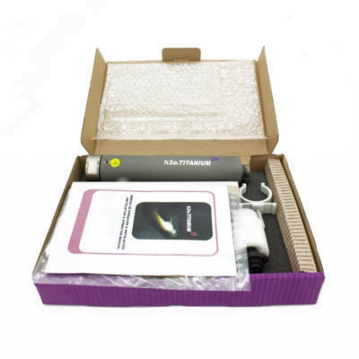
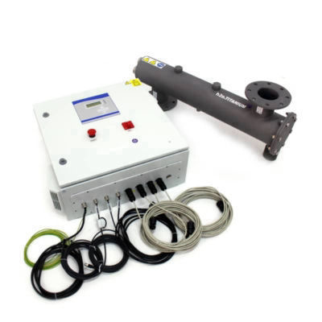

Products

Home Series
Titanium dioxide as the ultimate protective barrier for water treatment in homes, hotels, spas, gyms, hospitals. Purified water instantly and 24 hours a day.

Aquarium Series
Titanium dioxide for aquarium water treatment in order to reduce the concentration of microorganisms, odor, turbidity and ammonia, replicating the best conditions of natural aquatic habitats.

Industrial Series
Titanium dioxide for the treatment of water in the nuclear, automobile, tile, hospital, agricultural, food, textile, paper, fruit and vegetable industries, flows up to 1,000 m3 / h.